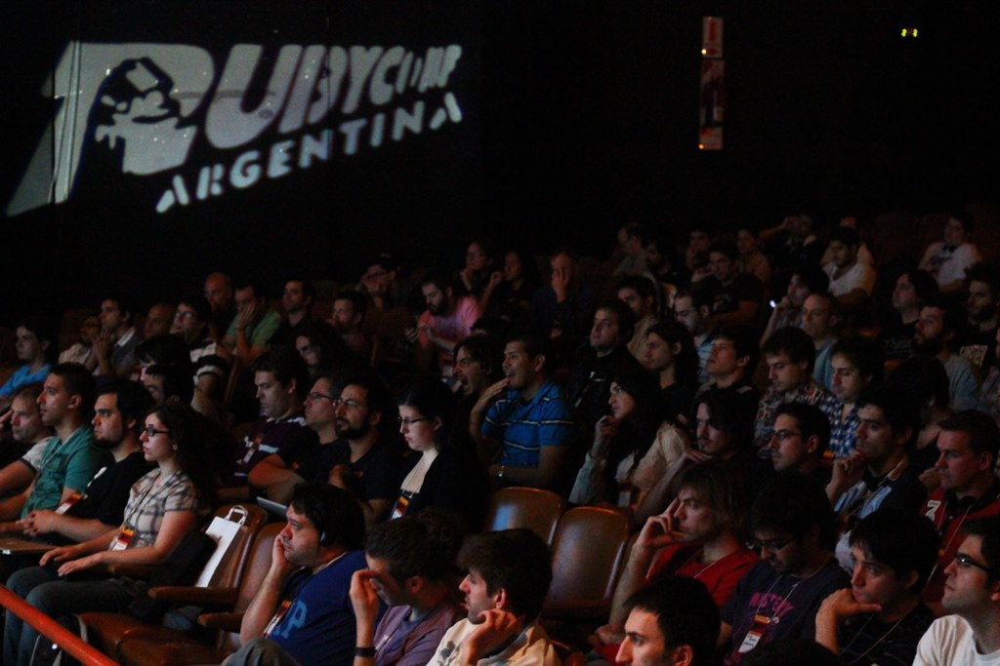
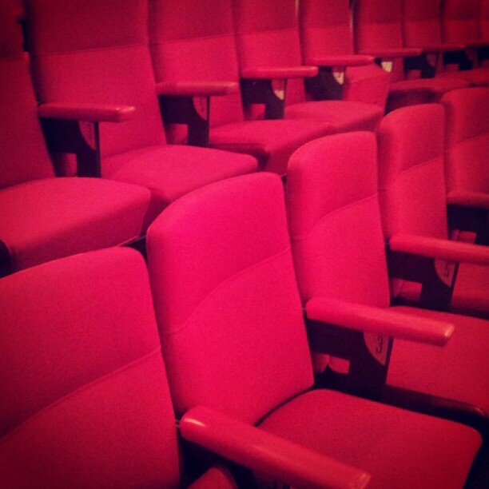

Ruby Argentina
Asociación Civil
16 de Junio de 2012
Misión
Difundir y promover el uso de Ruby organizando eventos y otras actividades [...], focalizándose en el desarrollo de una comunidad [...].
Sin fines de lucro
Eventos locales
Meetups mensuales (ruby.com.ar)

Charlas de Ruby Argentina
- "Introducción a Ruby y Rails"
- "Armá tu propio Ruby"
- "Introducción a Cuba"
- TBA
RubyConf Argentina 2011


RubyConf Argentina 2012 - Parte del "Tour Ruby Sur"
http://rubyconfargentina.org
19 y 20 de Octubre
Paseo La Plaza
@rubyconfar

+
¡25% de descuento!
Ruby Argentina Asociación Civil
- Martín Aceto (@maceto)
- Ernesto Tagwerker (@_nesto)
- Leandro López (@inkel)
- Matías Owsianik (@matiasow)
- Sebastián Rabuini (@sebasr)
- Michel Martens (@soveran)
- Lucas Florio (@lucasefe)
- Chad DePue (@chaddepue)
- Tom Henrik Aadland (@tomhenrik)
- Nicolás Cerrini (@ceneon)